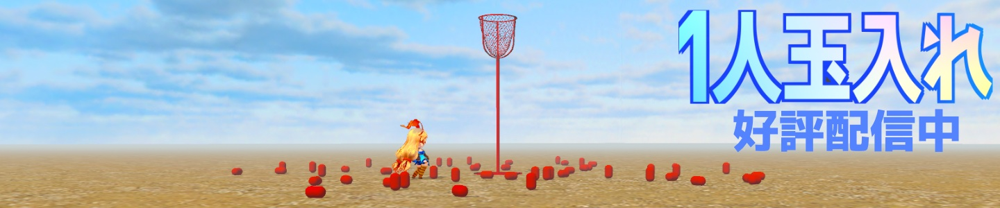
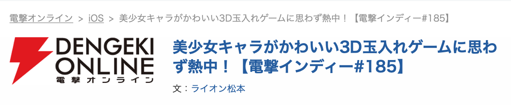

Joy from Yuuki Hyodo
Joy from Yuuki Hyodo
Joy from Yuuki Hyodo
Joy from Yuuki Hyodo

Last update: 2026-10-20
Yuuki Hyodoが制作する、星の街で星を集めるゲームです。 降ってくる星を網で受け止める「星降り」、空を飛んで星をつかまえる「飛行キャッチ」、 街を歩いたり飛んだりして探索する「フリー」の3つのモードと、景色を眺める「時計」を楽しめます。 ゲーム内の表示は日本語です。ランキングや日替わりコースなどのオンライン機能にはインターネット接続を使用します。 Googleアカウントの連携は設定から任意で行え、通常のゲームモードを遊ぶために連携する必要はありません。
Collecting Stardust is a game by Yuuki Hyodo about gathering stars in a city in the sky. Catch falling stars in Starfall, fly along routes in Flight Catch, or walk and fly through the city in Free mode. Clock mode lets you enjoy the scenery. The game interface and in-game text are currently in Japanese. Online features such as rankings and daily courses use an internet connection. Google account linking is optional in Settings and is not required to play the standard game modes.
Google連携とデータの取扱い / Google linking and data use
Privacy Policy ·
Terms ·
Support
念願のスマホアプリを
ついにリリース！
中学の時から将来自分のアプリを出したいと夢見始め、高校に入ってからプログラミングを始めました。
高校時代からUnity C#でゲームを開発し文化祭に出展してきましたがスマホ向けの開発は思うように進まず、大学3年を目前にようやくリリースすることができました。
完成までの話はまた別の機会に話すとして是非精魂込めて開発した初のスマートフォンアプリ「1人玉入れ 世界選手権」を遊んでください!!
▼2022年1月22日にKADOKAWA Game Linkage様が運営する電撃オンラインに「1人玉入れ」の記事を掲載していただきました▼

記事はこちら!